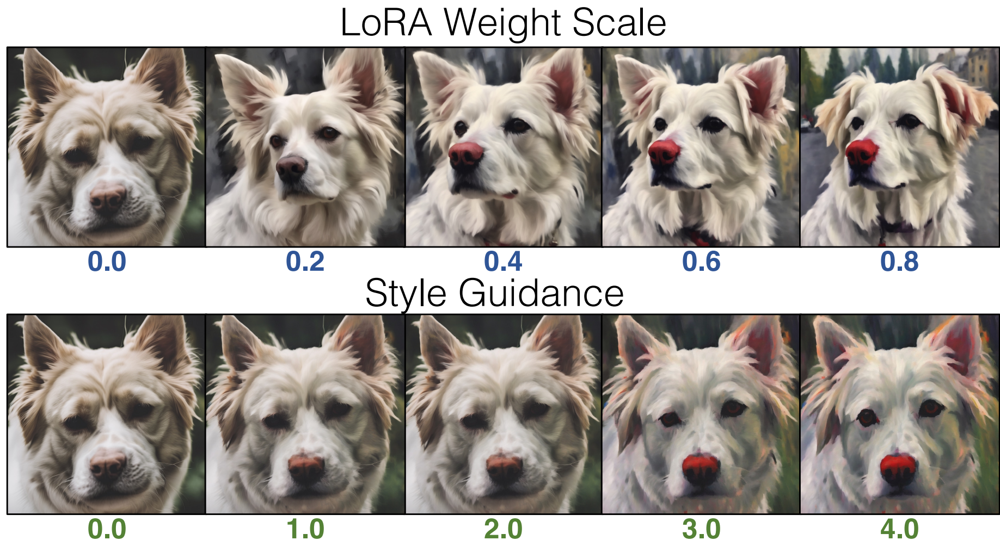

Pair Customization customizes a diffusion model to learn stylistic difference given a single image pair.
Style image credits: Jack Parkhouse
Abstract
Art reinterpretation is the practice of creating a variation of a reference work, making a paired artwork that exhibits a distinct artistic style.
We ask if such an image pair can be used to customize a generative model to capture the demonstrated stylistic difference.
We propose Pair Customization, a new customization method that learns stylistic difference from a single image pair and then applies the acquired style to the generation process.
Unlike existing methods that learn to mimic a single subject from a collection of images, our method captures the stylistic difference between paired images. This allows us to apply a stylistic change without overfitting to the specific image content in the examples. To address this new task, we employ a joint optimization method that explicitly separates the style and content into distinct LoRA weight spaces. We optimize these style and content weights to reproduce the content and style images while encouraging their orthogonality. During inference, we modify the diffusion process via a new style guidance based on our learned weights.
Both qualitative and quantitative experiments show that our method can effectively learn style while avoiding overfitting to image content, highlighting the potential of modeling such stylistic differences from a single image pair.
Problem Statement
Prior works on model customization/personalization take one or a few images of a single concept to customize large-scale text-to-image models. While they aim to learn styles without using pairs, the generated samples from these customized models often resemble the training images' content, such as specific objects, persons, and scene layouts.
These issues arise because the artistic intent is difficult to discern from a single image: unlike image pairs that can demonstrate a style through contrasts, a singleton example will always intertwine choices of both style and content. This ambiguity can cause the model to fail to capture the artistic style accurately and overfit to the example rather than the style, especially when generating images with the same/similar prompts as the training images.
On the other hand, Pair Customization exploits the contrast between image pairs to better disentangling content and style.
Pair Customization Training/Inference
(Left) We disentangle content and style from an image pair by jointly training two low-rank adapters, ContentLoRA and StyleLoRA representing content and style, respectively. We consider the following joint finetuning procedure: (Top Row) We fine-tune ContentLoRA to reconstruct content image conditioned on a content prompt. (Bottom Row) We reconstruct the style image using both ContentLoRA and StyleLoRA conditioned on a style prompt, but we only optimize StyleLoRA. (Right) At inference time, we only apply StyleLoRA to customize the model. Given the same noise seed, the customized model generates a stylized counterpart of the original pre-trained model output. V* is a fixed random rare token that is a prompt modifier for the content image. Style image credits: Jack Parkhouse
Results/Comparison with Baselines
Our method faithfully generates images with stylization applied in many settings/contexts. We compare to the two strongest baselines we tested against, or Conpcepts Sliders [1] and DreamBooth LoRA [4, 5]:
Updated Style Application
We introduce Style Guidance, a new formulation for smoothly applying a stylized model to generated outputs. We find that this method is superior to LoRA scale, or the
practice of interpolating the strength of the output from finetuned LoRA layers. Refer to Section 3.3 of the paper for more details.

Multi-Slider Compositionality
We can compose multiple customized models by directly blending each style guidance together. Adjusting blending strength
of each model allows us to acquire a smooth style transition
References
1. Gandikota, R., Materzynska, J., Zhou, T., Torralba, A., Bau, D.: Concept
sliders: Lora adaptors for precise control in diffusion models. arXiv preprint
arXiv:2311.12092 (2023)
2. Kumari, N., Zhang, B., Zhang, R., Shechtman, E., Zhu, J.Y.: Multi-concept cus-
tomization of text-to-image diffusion. In: 2023 IEEE/CVF Conference on Com-
puter Vision and Pattern Recognition (CVPR). pp. 1931-1941. IEEE Computer
Society (2023)
3. Gal, R., Alaluf, Y., Atzmon, Y., Patashnik, O., Bermano, A.H., Chechik, G.,
Cohen-or, D.: An image is worth one word: Personalizing text-to-image generation
using textual inversion. In: The Eleventh International Conference on Learning
Representations (2022)
4. Ruiz, N., Li, Y., Jampani, V., Pritch, Y., Rubinstein, M., Aberman, K.: Dream-
booth: Fine tuning text-to-image diffusion models for subject-driven generation.
In: Proceedings of the IEEE/CVF Conference on Computer Vision and Pattern
Recognition. pp. 22500-22510 (2023)
5. Ryu, S.: Low-rank adaptation for fast text-to-image diffusion fine-tuning. https:
//github.com/cloneofsimo/lora (2023)
Acknowledgements:
The website template is taken from the Style Aligned Project Page.